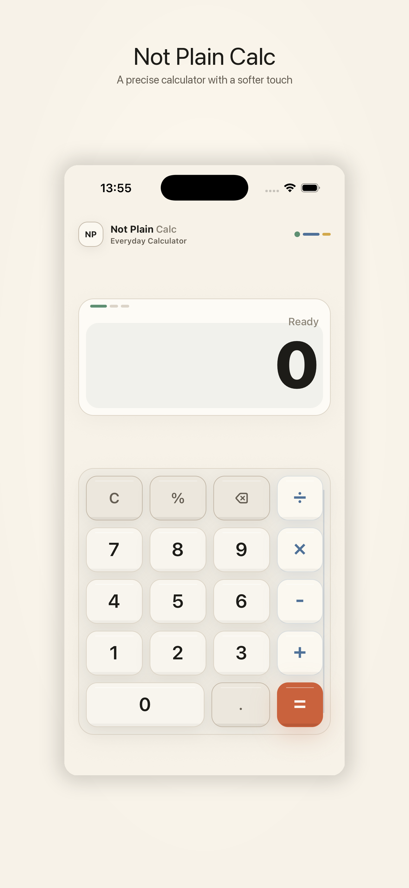
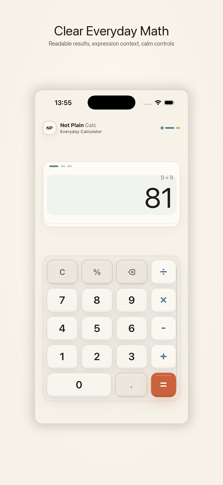
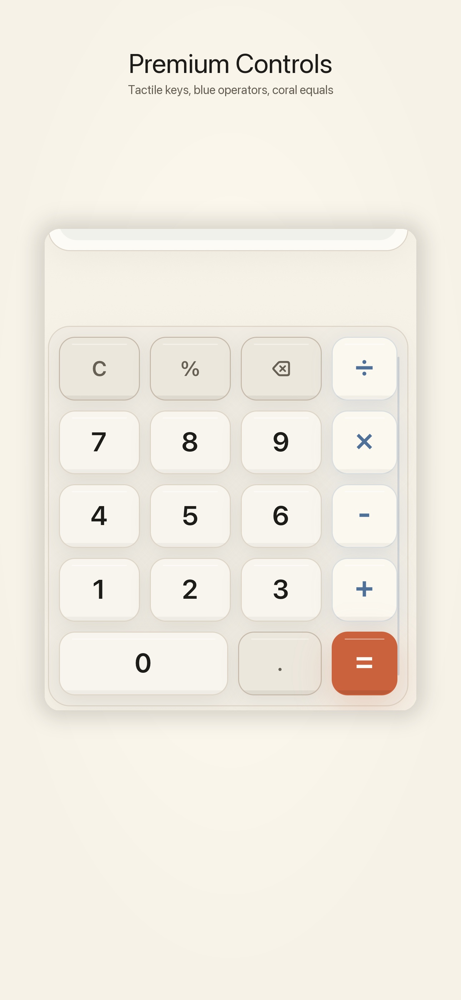
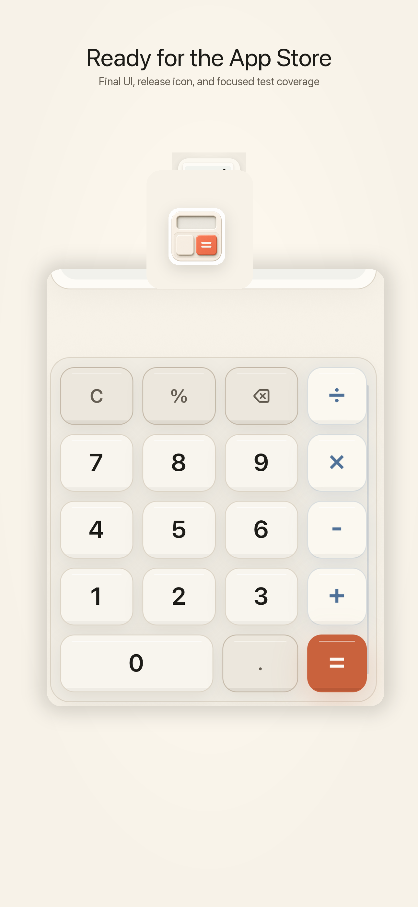

Clear Arithmetic
Standard calculator behavior with addition, subtraction, multiplication, division, percent, decimal input, clear, and delete.
Offline iPhone calculator
A focused everyday calculator with clear results, tactile controls, and a calmer visual identity.

Standard calculator behavior with addition, subtraction, multiplication, division, percent, decimal input, clear, and delete.
Warm platinum surfaces, blue operator accents, and a coral equals key give the app a distinct but restrained identity.
No login, no analytics, no tracking, no ads, and no backend. Calculations happen on device.



Not Plain Calc is independent and is not affiliated with, endorsed by, or sponsored by Apple Inc. The visual direction is an original reinterpretation of friendly, structured utility design principles.